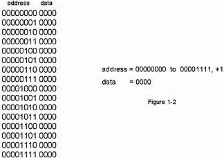
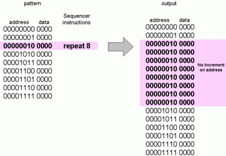
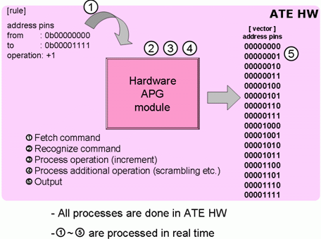
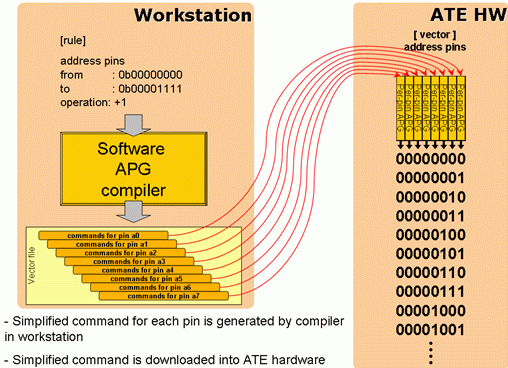
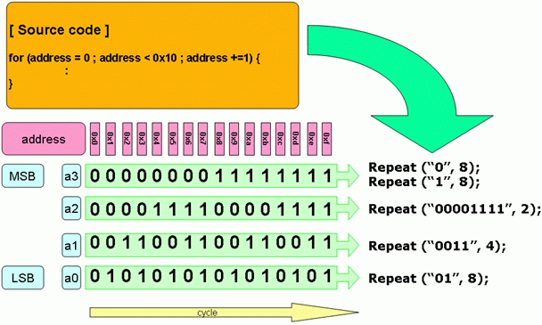
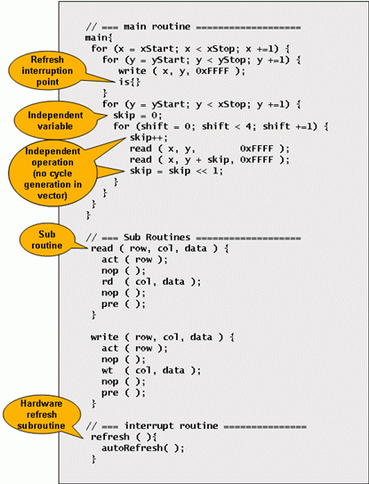

MTP - New memory test solution enabled by software for true per-pin test processor architecture system
Takashi Itoh, Verigy
Paper ID: 120635 April 2010
Abstract
Memory is important part of SOC/SiP. Today's devices have a variety of capabilities for controlling, communication, entertainment, etc., and memory supports those capabilities as temporally workspace, program code storage, cache.
This paper describes how to test memory by ATE without dedicated hardware for memory test.
Introduction
Testing memory device is different from normal logic device testing. The minimum units, called memory cells, are arrayed in a matrix, and each memory cell has its own unique address. To access the target memory cell, an address should be specified with data.
All of the memory cells have to be tested during a test pattern, thus the basic steps of memory test are
- Write data to all cells
- Read data from all cells and compare read data with data in write sequence
At this time, ATE needs to specify the address in order and the pattern for the address pins is changed regularly with some rule. In the simplest case, the address is incremented or decremented by 1. And changes are repeated from 0 to the maximum address (or vise-versa). It is not a simple repeat, thus repeat command cannot be used for this kind of pattern. This kind of vector can be described by usual flat logic vector like Figure 1.

Figure 1: Pattern in flat and rule style.
But this is not an efficient way. For example, it's not easy to modify such a pattern. Additionally, if the size of a memory device becomes big, the vector cannot be downloaded, or required number of patterns cannot be stored into vector memory of ATE.
If it was possible to describe pattern by rule like Figure 1-2, the long iteration of pattern can be described in simple way, which solves the above problems.
ATE should provide way to generate pattern by rule for memory testing. This capability of pattern generation is so called Algorithmic Pattern Generator. Algorithm means rules how to generate address and data and commands by rule.
In this paper, "APG" is used for Algorithmic Pattern Generator as abbreviation.
Traditional way for generating memory pattern
Usually an APG is provided as special hardware module. Normal logic test modules do not have the capability to generate algorithmic patterns. Logic pattern is also controlled by sequencing instructions to do repeat or loop, but they are applied to all of the pins, not for modifying some of the pins. (Figure 2)

Figure 2: Normal sequencer instruction is not suitable for generating memory test pattern.
Such a special hardware module (hardware APG) has an ALU (Arithmetic Logic Unit), and can handle calculation for address, and generates patterns according to an algorithm.
A dedicated language is used for describing the algorithm. The source code of the algorithm in a dedicated language is downloaded to the hardware APG, and this source code is recognized in real time to generate the pattern for memory testing.
The language should be recognized hardware directly, so mnemonic like language is used in some case.

Figure 3: Traditional hardware APG.
Software APG by TPPP architecture
In case of Test Processor Per-Pin (TPPP) architecture, a significant difference from traditional ATE is to have test processor in every pin, and each test processor has its own sequencer, and it can work independently. At the result, a TPPP ATE system can enable memory test capability without any additional hardware.
Overview of software APG
In case of TPPP architecture with software APG, test pattern generation is separated from execution. Finally, each test processor recognizes and executes its own bunch of simple sequencer commands. Before that, conversion from source code (algorithm) to vector binary is done in workstation as "compile". Any type of language can be used for describing algorithm, because the processing of the compilation is done by the workstation, and the ATE hardware does not need to consider the language type. This kind of flexibility is one benefit of software APG. In case of the V93000 system, a C-like language is used for describing algorithms.
Figure 4 is an overview of how to generate per-pin sequencer vectors for each pin from algorithms.

Figure 4: Overview of software APG for Test Processor Per-Pin architecture.
The Principle of compression
The Benefits using rules to describe patterns - as done by APGs - are ...
- Long and complicate pattern can be described in short code
- Big pattern can be stored in small vector memory
- Easy to maintain
If the compilation by software APG generated a flat pattern for each test processor, it would be meaningless to use a software APG. The principle of how to convert from human-readable algorithm to machine-readable per-pin sequencer commands is discussed in this chapter.
Figure 5 is a simple example of this principle. The fundamental operation of the algorithm is a repeat with address increment or decrement. In this case, the address is incremented from 0x0 to 0xf in hexadecimal. The calculated address value is recognized as binary value, and finally the 0/1 values become drive high/low, or compare H/L. Each bit from LSB to MSB is assigned to the address pins a3, a2, a1, a0 and generates signals.
The rule in this case is very simple, but it's not possible to describe by normal sequencer instruction, because it's not possible for each pin to operate in a different way in traditional ATE. But in case of TPPP, each pin can have its own different sequencer commands and the boundary of repetition of repeat command is not needed to align with the other pins. In other words, perfectly independent sequencer commands can be executed at the same time. A software APG uses this advantage to describe vector in machine-readable sequencer commands and to compress size of vector.

Figure 5: Principal of pattern compression. In this example, address is incremented by 1 from 0x0 to 0xF in hexadecimal.
Algorithm that is described in C-like language is compiled into Per-Pin sequencer subroutine. Source code described in cycle-aligned manner is finally converted to independent per-pin base commands by "compile".
In Figure 5., on the right hand side, you can find simple rules that generate the pattern for each pin for a +1 increment across the address pins a0 to a3. For example, LSB (a0) repeats "01" only during loop of address increment. a2 repeats "0011" only. These rules are not changed even if the end of the loop became bigger or smaller.
This way a very long algorithm iteration can be described in simple machine-readable sequencer commands and the size of the vector is compressed significantly. A similar process will be applied for more complicate algorithm regarding the loop structure of the source code.
Patterns handled by APG must have rules to describe pattern in algorithms, thus these kind of conversion and compression can be done for every memory pattern.
MTP - the solution for memory test
MTP (Memory Test software Plus) is the new memory test solution software for the V93000 system. MTP uses a software APG for TPPP architecture as discussed in chapter 3. Additionally, a variety of flexibilities are added.
Testing memory for SOC/SiP device requires several perspective of flexibility. MTP and V93000 SOC system provides them through a combination of software APG and TPPP.
Setup flexibility by software APG
These flexibilities are benefits of a software APG that generates vector binary by compiling source code.
- Modular structured setup file for device oriented setup
- Setup files are separated into architecture of memory, access cycles, algorithm, pin mapping, etc. Thus, reuse and sharing of complete or partial setup data can be done easily.
- No interface dependency
- All of memory interfaces like DRAM, SRAM, FLASH, serial, parallel, protocol base interface (like XDR) can be supported by MTP.
- Friendly C-like language for describing algorithm
- C-like syntax and operators are easy to understand for users.
- Name of access cycle for describing read and write sequences can be defined by user like C's function.
- Unlimited number of independent variables and independent calculation
- No limitation for number of variable
- User can describe operation and calculation in separate lines for complicated address calculation.
- Variety of operators
- Calculation is recognized and processed by the compiler in the workstation, so a variety of operators can be handled.
- Example : +, -, *, /, <<, >>, bitwise xor, bitwise and, bitwise or, bitwise not
- Isolation from hardware timing setup (x-mode)
- Consistency between algorithm and hardware timing setup is handled by the compiler, so if you might need to change x-mode, you do not need to modify your algorithm, just to do re-compile.
- On-the-fly switching of memory and logic vector
- Memory test vector is generated as subroutine, and the same hardware handles both flat logic and memory vector. User can mix flat vector (example: for initializing device to access embedded memory) and memory test pattern easily.
Figure 6. is example of algorithm description by MTP.

Figure 6: Example of algorithm description by MTP. This is a pseudo algorithm for explanation reasons
In reading sequence, some special operations are added for explanation. Variable skip is used for additional reading like walking algorithm. This value is shifted to left. This means skip becomes 1, 2, 4, 8, instead of 1, 2, 3, 4. Additionally, skip is incremented in each iteration. Thus, skip becomes 1, 3, 7, 15 finally.
Calculation for skip is in independent line, but this is recognized by compiler in workstation and no additional cycle is generated for actual pattern execution.
is{} specifies point to place refresh subroutine by hardware,
when period to interruption has come.
Both read(row, col, data) and
write(row, col, data) are subroutines. User can define almost same as
C-language.
refresh ( ) is special subroutine for refresh. This is used
only when refresh interruption should occur. Insertion of refresh subroutine is done by hardware
during pattern execution in real time automatically.
Flexibility of the Test Processor Per-Pin architecture
Test Processor Per-Pin architecture can enable another type of flexibilities.
- Flexible pin assignment
- Each has test processor, thus each pin can have APG.
- No routing, no relays
- No limitation for multisite configuration
- Wide 64 bit address for each x, y, z address and unlimited data bus width
- No dedicated hardware enable less/no limitation
- Signal integrity
- No MUX, no routing relays
- High speed APG
- The same test processor is used for both logic and memory test, and each test processor handles simplified sequencer commands, which are optimized for each pin. This means that complicated memory patterns can be generated in high speed logic ATE speed, which is tough handle for traditional hardware based APGs.
Other flexibilities
MTP provides following capabilities to support all types of memory test.
- Bitmap viewer
- Redundancy Repair Analysis
- Hardware Refresh (gapless insertion)
- Counted Match Loop
- Pattern Synchronous DC events
Conclusion
The combination of TPPP and software APG provides the required flexibility of memory test for SOC/SiP. This methodology is effective for complex SOC/SiP application situations and provides benefits for customers who need to test memories.
References
[1] A. J. van de Goor, TESTING SEMICONDUCTOR MEMORIES, A. J. van de Goor, Gouda, The Netherlands, 1998.
[2] Verigy, MTP on SOC 2.66.0 documentation, September 16, 2009